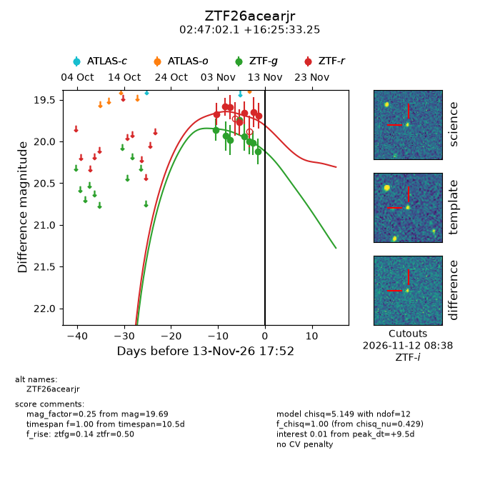
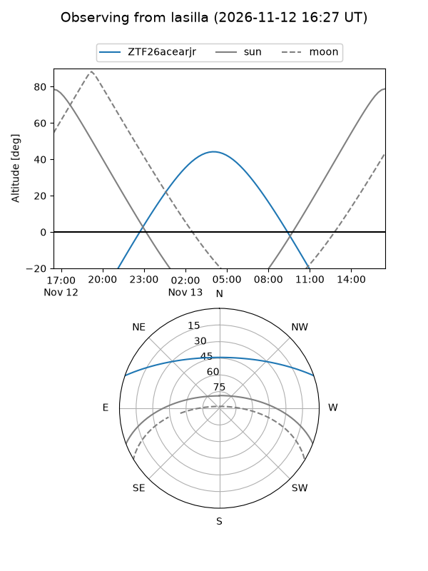
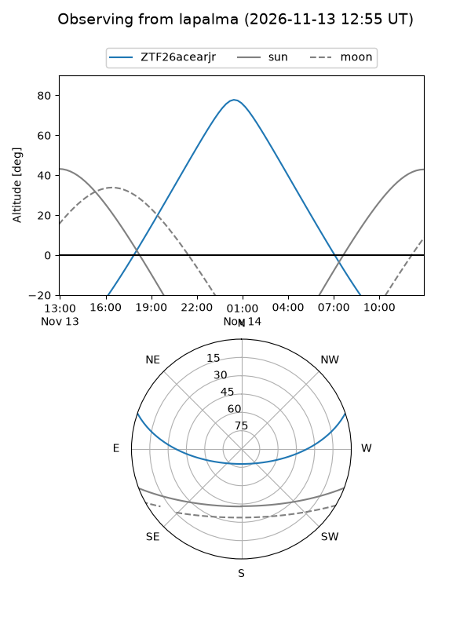
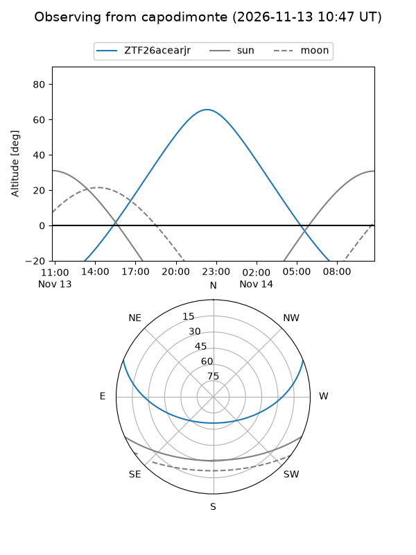
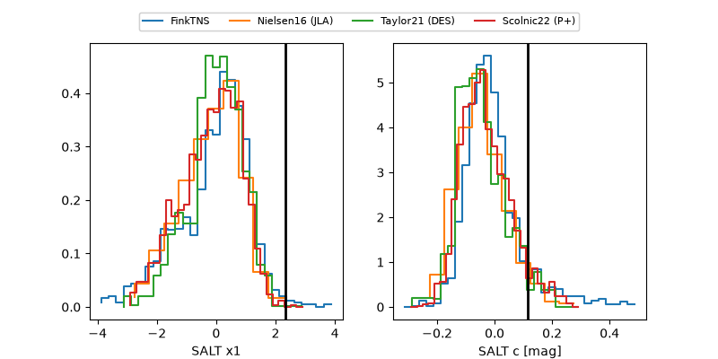

ZTF26acearjr
Target ZTF26acearjr at 2026-11-13 17:58
Aliases and brokers:
FINK-ZTF: ztf.fink-portal.org/ZTF26acearjr
Lasair-ZTF: lasair-ztf.lsst.ac.uk/objects/ZTF26acearjr
ALeRCE-ZTF: alerce.online/object/ZTF26acearjr
Direct TNS query: direct search
alt names
ZTF26acearjr (ztf,fink_ztf)
Coordinates:
equatorial (ra, dec) = 41.7586,+16.42590
equatorial (HMS+DMS) = 02:47:02.06,+16:25:33.25
galactic (l, b) = (159.0793,-38.20072)
Flags:
peak dt: +9.5
Photometry:
last ztfg=20.12, ztfr=19.69
8 ztfg, 7 ztfr detections
Lightcurve

Visibility



Additional plots
